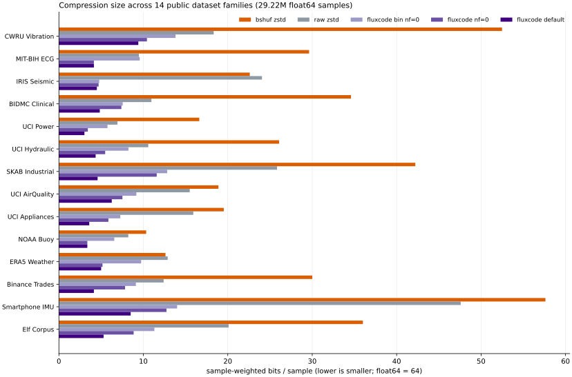
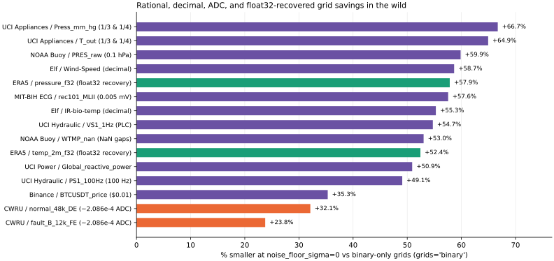
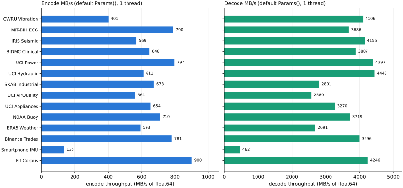
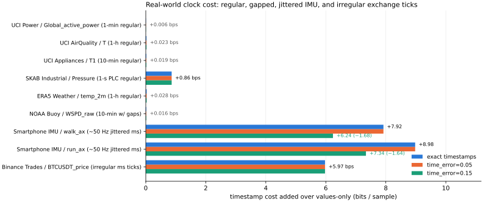

This report evaluates fluxcode on 14 public dataset families
(94 series, 29,221,196 float64 samples, 233.8 MB uncompressed).
The corpus covers high-frequency bearing vibration, clinical ECG/PPG waveforms, 24-bit sigma-delta broadband seismology,
multi-rate industrial PLC telemetry, residential smart-meter power, oceanographic buoys, float32-originated
ERA5 weather, irregular millisecond exchange trades, jittered smartphone IMU clocks, and the
VLDB/SIGMOD floating-point compression benchmark (Elf / Chimp / ALP).
Every block group passed fluxcode.verify.encode_group with 0 errors.
To regenerate, run make datasets && make public-bench && make public-report,
or cd experimental && uv run python make_public_report.py using an existing
experimental/public_datasets/results.json.
All sizes are sample-weighted bits per sample over whole block groups (60 blocks of 1,000 samples,
where raw float64 is 64 bits/sample). The baselines are raw zstd (zstd level 3 on
raw float64 bytes) and bshuf zstd (byte-shuffled float64 followed by
zstd level 3).

| dataset family | samples | raw zstd | bshuf zstd | fc default | fc eff=1 | fc eff=5 | fc nf=0 | fc bin nf=0 | grid gain | ratio vs f64 (def) |
|---|---|---|---|---|---|---|---|---|---|---|
| CWRU Vibration | 2,307,240 | 18.33 | 52.48 | 9.41 | 9.45 | 9.03 | 10.43 | 13.81 | +24.5% | 6.8× |
| MIT-BIH ECG | 2,600,000 | 9.48 | 29.63 | 4.14 | 4.08 | 4.04 | 4.14 | 9.57 | +56.7% | 15.4× |
| IRIS Seismic | 864,000 | 24.05 | 22.61 | 4.50 | 4.54 | 4.44 | 4.70 | 4.78 | +1.6% | 14.2× |
| BIDMC Clinical | 240,004 | 10.95 | 34.59 | 4.84 | 5.57 | 4.80 | 7.40 | 7.56 | +2.1% | 13.2× |
| UCI Power | 14,526,813 | 6.93 | 16.63 | 3.03 | 3.14 | 3.01 | 3.43 | 5.76 | +40.5% | 21.2× |
| UCI Hydraulic | 3,987,600 | 10.59 | 26.08 | 4.35 | 4.39 | 4.27 | 5.48 | 8.23 | +33.4% | 14.7× |
| SKAB Industrial | 65,835 | 25.83 | 42.21 | 4.58 | 4.62 | 4.56 | 11.59 | 12.83 | +9.7% | 14.0× |
| UCI AirQuality | 65,499 | 15.49 | 18.90 | 6.26 | 6.37 | 6.28 | 7.52 | 9.17 | +18.0% | 10.2× |
| UCI Appliances | 157,880 | 15.92 | 19.53 | 3.60 | 3.73 | 3.58 | 5.86 | 7.27 | +19.4% | 17.8× |
| NOAA Buoy | 525,230 | 8.22 | 10.34 | 3.37 | 3.55 | 3.36 | 3.37 | 6.56 | +48.7% | 19.0× |
| ERA5 Weather | 52,560 | 12.89 | 12.62 | 5.00 | 5.10 | 4.97 | 5.16 | 9.74 | +47.0% | 12.8× |
| Binance Trades | 2,229,246 | 12.41 | 30.01 | 4.14 | 4.58 | 4.08 | 7.84 | 9.11 | +14.0% | 15.4× |
| Smartphone IMU | 5,307 | 47.58 | 57.62 | 8.50 | 8.68 | 8.65 | 12.74 | 14.00 | +9.0% | 7.5× |
| Elf Corpus | 1,593,982 | 20.10 | 36.00 | 5.29 | 5.38 | 5.28 | 8.85 | 11.31 | +21.7% | 12.1× |
| overall sample-weighted | 29,221,196 | 10.38 | 24.27 | 4.10 | 4.21 | 4.03 | 5.07 | 7.67 | +33.9% | 15.6× |
Across several datasets, bshuf zstd is 2–3× larger than raw zstd—for example,
52.48 vs 18.33 bps on CWRU Vibration, 29.63 vs 9.48 bps on MIT-BIH ECG, and 16.63 vs 6.93 bps on UCI Power.
Calibrated-ADC and decimal-rounded series tend to have relatively few distinct values (CWRU
normal_48k_DE has only 2,254 unique values across 485,643 samples), so raw zstd's
LZ77 matcher can copy entire repeated 8-byte floats in a single match. Byte-shuffling splits those 8-byte values
across separate streams, and for non-power-of-two steps like 0.005 or 2.086e-4, the
six low mantissa bytes look nearly random on their own and no longer match together. fluxcode
improves on both baselines by 2–7× because it recovers the underlying integer grid first, then applies
per-block delta coding (orders 0–3) and bit-plane zstd.
Comparing fluxcode nf=0 (Params(noise_floor_sigma=0)) against
fluxcode bin nf=0 (grids='binary') isolates the savings from decimal, rational, and
scaled-ADC grid detection on real data.

2.086e-4
calibration step. Scaled-grid detection saves +24.5% across the group (up to +32.1% on
normal_48k_DE) at ~1 ULP (2.8e-17) error when noise_floor_sigma=0.0.005 mV ADC step): 11-bit WFDB-212 counts scaled by 200 counts/mV land
on an exact scaled decimal grid, compressing to 4.14 bps bit-exact across all 2.6M samples, which is
+56.7% smaller than binary-only grids (9.57 bps).1/3 & 1/4 rational grids): 10-minute averaged
weather and indoor sensors (T_out, Press_mm_hg, Windspeed) sit on exact
rational multiples of 1/3 and 1/4, compressing to 0.92–1.31 bps at 0.0000% error (+54.6% to +66.7%
smaller than binary grids).nf=0 with a
+33.4% group-wide grid gain (up to +54.7% on VS1_1Hz).temp_2m_f32 and pressure_f32
are cast through float32 and promoted back to float64, introducing ~10−7
binary rounding noise. fluxcode recovers the exact decimal grid at the same bit rates as
the clean float64 originals (4.95 bps and 4.10 bps, +52.4% and +57.9% smaller than
binary grids).IU.ANMO.00 during the 2023-02-06 M7.8 Kahramanmaras earthquake) uses a 24-bit sigma-delta ADC
with a steep hardware anti-alias filter. Because the signal is smooth and band-limited, higher-order delta
predictors work well: raw counts compress to 4.16–4.37 bps (0.002% max error), and calibrated ground
velocity (ANMO_BHZ_mps, ~10−4 m/s scale) compresses to 4.96 bps (0.023% max
error), which is 7× smaller than raw zstd (34.46 bps) and 9× smaller than
bshuf zstd (44.95 bps).effort=1 (fastest) lands within
1–2% of the default effort=4. On 125 Hz clinical waveforms (BIDMC PPG, respiration, and ECG),
effort=4 reaches 4.84 bps versus 5.57 bps at effort=1 (a 13%
reduction from better predictor and codec selection), while effort=5 improves that by only
0.8% (4.80 bps).NaN (NOAA Buoy): Legacy buoy feeds encode missing values as
in-band sentinels (99.0, 999.0, 9999.0), which inflate the block range
and create large delta spikes. Replacing those sentinels with IEEE NaN moves missingness into
fluxcode's non-finite mask: WTMP drops from 1.92 bps (WTMP_raw)
to 1.28 bps (WTMP_nan, −33%), and WVHT (66.7% missing) drops from
4.08 bps to 2.79 bps (−32%), while remaining bit-exact on every finite sample.Single-threaded throughput (NUMBA_NUM_THREADS=1, default Params()) is measured in
MB/s of uncompressed float64 input (8 bytes/sample). On full-length series, decode runs at
2.5–5.0 GB/s and encode at 400–1,000 MB/s. Smartphone IMU is slower (140 MB/s encode, 480 MB/s
decode) because each trial contains only 761–1,008 samples, so per-call Python and zstd setup overhead dominates.

This comparison measures the extra bits per sample needed to store timestamps alongside values, comparing
exact timestamps against tolerance-rounded timestamps (time_error=0.05 and 0.15)
across regular, gapped, jittered, and event-driven clocks.

| dataset (channel) | N | clock type | values only | + exact times | exact time cost | + time_error=0.05 | + time_error=0.15 |
|---|---|---|---|---|---|---|---|
UCI Power / Global_active_power | 2,075,259 | 1-min regular | 6.02 | 6.03 | +0.006 | 6.03 | 6.03 |
UCI AirQuality / T | 9,357 | 1-h regular | 5.89 | 5.92 | +0.023 | 5.92 | 5.92 |
UCI Appliances / T1 | 19,735 | 10-min regular | 3.21 | 3.23 | +0.019 | 3.23 | 3.23 |
SKAB Industrial / Pressure | 9,405 | 1-s PLC regular | 2.71 | 3.57 | +0.863 | 3.57 | 3.57 |
ERA5 Weather / temp_2m | 8,760 | 1-h regular | 4.95 | 4.98 | +0.028 | 4.98 | 4.98 |
NOAA Buoy / WSPD_raw | 52,523 | 10-min w/ gaps | 4.60 | 4.62 | +0.016 | 4.62 | 4.62 |
Smartphone IMU / walk_ax | 1,008 | ~50 Hz jittered ms | 8.26 | 16.18 | +7.921 | 16.18 | 14.50 |
Smartphone IMU / run_ax | 761 | ~50 Hz jittered ms | 8.09 | 17.07 | +8.978 | 17.07 | 15.43 |
Binance Trades / BTCUSDT_price | 1,114,623 | irregular ms ticks | 3.03 | 9.00 | +5.973 | 9.00 | 9.00 |
time_error: Real ~50 Hz phone clocks
(dt 16–177 ms) cost +7.92 to +8.98 bps when stored exactly. Setting
Params(time_error=0.15) smooths out the hardware jitter and saves ~1.65–1.68 bps while
preserving sample order and keeping every timestamp within tolerance.BTCUSDT_price at 3.03 bps bit-exact on
the $0.01 grid. Adding 1.11M exact irregular millisecond arrival timestamps adds +5.973 bps
(9.00 bps total for exact cent prices and millisecond timestamps). Because trade arrivals have no
periodic cadence, time_error=0.05 and 0.15 leave them unmodified instead of
distorting event timing.fc default = Params(); fc nf=0 =
Params(noise_floor_sigma=0); fc bin nf=0 =
Params(noise_floor_sigma=0, grids='binary'). Error columns show worst block max absolute error
as % of block range (or EXACT when bit-exact across all samples).
| series | N | NaN% | raw zstd | bshuf zstd | fc default | err% (def) | fc nf=0 | exact? (nf=0) | fc bin nf=0 | grid gain | enc/dec MB/s (def) |
|---|---|---|---|---|---|---|---|---|---|---|---|
normal_48k_DE | 485,643 | 0.0% | 16.76 | 49.75 | 9.67 | 0.134% | 9.75 | 0.0009% | 14.36 | +32.1% | 374 / 3671 |
normal_48k_FE | 485,643 | 0.0% | 16.97 | 50.05 | 9.51 | 0.252% | 10.03 | 0.0000% | 14.64 | +31.4% | 391 / 4593 |
fault_IR_48k_DE | 485,643 | 0.0% | 19.71 | 54.67 | 9.64 | 0.023% | 10.21 | 0.0000% | 12.02 | +15.1% | 413 / 4109 |
fault_IR_48k_FE | 485,643 | 0.0% | 19.39 | 54.19 | 9.59 | 0.086% | 10.41 | 0.0000% | 13.20 | +21.1% | 398 / 4173 |
fault_B_12k_DE | 121,556 | 0.0% | 19.13 | 54.72 | 12.41 | 0.000% | 12.41 | 0.0000% | 15.45 | +19.7% | 393 / 5414 |
fault_B_12k_FE | 121,556 | 0.0% | 18.10 | 52.72 | 6.44 | 1.204% | 11.77 | 0.0000% | 15.45 | +23.8% | 463 / 3735 |
fault_B_12k_BA | 121,556 | 0.0% | 19.71 | 54.99 | 6.22 | 0.813% | 12.29 | 0.0000% | 14.69 | +16.3% | 499 / 3534 |
| group avg (2,307,240) | 18.33 | 52.48 | 9.41 | 10.43 | 13.81 | +24.5% |
| series | N | NaN% | raw zstd | bshuf zstd | fc default | err% (def) | fc nf=0 | exact? (nf=0) | fc bin nf=0 | grid gain | enc/dec MB/s (def) |
|---|---|---|---|---|---|---|---|---|---|---|---|
rec100_MLII | 650,000 | 0.0% | 9.61 | 29.50 | 4.41 | EXACT | 4.41 | EXACT | 10.38 | +57.5% | 791 / 3586 |
rec100_V5 | 650,000 | 0.0% | 9.52 | 30.61 | 4.18 | EXACT | 4.18 | EXACT | 9.65 | +56.6% | 791 / 3726 |
rec101_MLII | 650,000 | 0.0% | 10.17 | 30.68 | 4.46 | EXACT | 4.46 | EXACT | 10.50 | +57.6% | 803 / 3642 |
rec101_V1 | 650,000 | 0.0% | 8.61 | 27.74 | 3.53 | EXACT | 3.53 | EXACT | 7.77 | +54.5% | 774 / 3796 |
| group avg (2,600,000) | 9.48 | 29.63 | 4.14 | 4.14 | 9.57 | +56.7% |
| series | N | NaN% | raw zstd | bshuf zstd | fc default | err% (def) | fc nf=0 | exact? (nf=0) | fc bin nf=0 | grid gain | enc/dec MB/s (def) |
|---|---|---|---|---|---|---|---|---|---|---|---|
ANMO_BHZ_counts | 288,000 | 0.0% | 18.94 | 11.53 | 4.37 | 0.002% | 4.37 | 0.0015% | 4.49 | +2.5% | 579 / 4095 |
ANMO_BHZ_mps | 288,000 | 0.0% | 34.46 | 44.95 | 4.96 | 0.023% | 5.58 | 0.0015% | 5.58 | +0.0% | 548 / 4112 |
ANMO_BH1_counts | 288,000 | 0.0% | 18.75 | 11.34 | 4.16 | 0.002% | 4.16 | 0.0015% | 4.27 | +2.6% | 580 / 4262 |
| group avg (864,000) | 24.05 | 22.61 | 4.50 | 4.70 | 4.78 | +1.6% |
| series | N | NaN% | raw zstd | bshuf zstd | fc default | err% (def) | fc nf=0 | exact? (nf=0) | fc bin nf=0 | grid gain | enc/dec MB/s (def) |
|---|---|---|---|---|---|---|---|---|---|---|---|
RESP | 60,001 | 0.0% | 13.02 | 38.91 | 3.12 | 0.004% | 4.30 | 0.0015% | 4.30 | +0.0% | 672 / 3728 |
PLETH | 60,001 | 0.0% | 11.18 | 33.98 | 4.27 | 0.016% | 6.89 | EXACT | 7.53 | +8.6% | 772 / 3716 |
ECG_II | 60,001 | 0.0% | 10.48 | 35.79 | 6.29 | 0.040% | 9.72 | 0.0015% | 9.72 | +0.0% | 555 / 4375 |
ECG_V | 60,001 | 0.0% | 9.13 | 29.70 | 5.69 | 0.043% | 8.68 | 0.0015% | 8.68 | +0.0% | 629 / 3800 |
| group avg (240,004) | 10.95 | 34.59 | 4.84 | 7.40 | 7.56 | +2.1% |
| series | N | NaN% | raw zstd | bshuf zstd | fc default | err% (def) | fc nf=0 | exact? (nf=0) | fc bin nf=0 | grid gain | enc/dec MB/s (def) |
|---|---|---|---|---|---|---|---|---|---|---|---|
Global_active_power | 2,075,259 | 1.3% | 12.64 | 40.55 | 6.02 | 0.438% | 6.50 | EXACT | 9.67 | +32.8% | 576 / 3191 |
Global_reactive_power | 2,075,259 | 1.3% | 8.41 | 31.64 | 4.40 | 0.470% | 4.43 | EXACT | 9.02 | +50.9% | 669 / 3978 |
Voltage | 2,075,259 | 1.3% | 16.62 | 31.80 | 5.82 | 0.511% | 8.13 | EXACT | 13.09 | +37.9% | 1128 / 4948 |
Global_intensity | 2,075,259 | 1.3% | 6.13 | 9.15 | 2.77 | 0.552% | 2.77 | EXACT | 5.47 | +49.4% | 766 / 3654 |
Sub_metering_1 | 2,075,259 | 1.3% | 0.59 | 0.53 | 0.33 | EXACT | 0.33 | EXACT | 0.53 | +38.8% | 953 / 6875 |
Sub_metering_2 | 2,075,259 | 1.3% | 1.65 | 1.32 | 0.76 | EXACT | 0.76 | EXACT | 1.06 | +28.5% | 813 / 5400 |
Sub_metering_3 | 2,075,259 | 1.3% | 2.48 | 1.38 | 1.08 | EXACT | 1.08 | EXACT | 1.44 | +25.4% | 925 / 4531 |
| group avg (14,526,813) | 6.93 | 16.63 | 3.03 | 3.43 | 5.76 | +40.5% |
| series | N | NaN% | raw zstd | bshuf zstd | fc default | err% (def) | fc nf=0 | exact? (nf=0) | fc bin nf=0 | grid gain | enc/dec MB/s (def) |
|---|---|---|---|---|---|---|---|---|---|---|---|
PS1_100Hz | 1,200,000 | 0.0% | 11.59 | 29.30 | 5.63 | 1.172% | 5.67 | EXACT | 11.14 | +49.1% | 548 / 5165 |
EPS1_100Hz | 1,200,000 | 0.0% | 5.36 | 3.62 | 1.51 | EXACT | 1.51 | EXACT | 2.69 | +44.1% | 572 / 4992 |
FS1_10Hz | 1,323,000 | 0.0% | 14.30 | 41.27 | 5.53 | 0.083% | 8.83 | EXACT | 9.78 | +9.7% | 664 / 3618 |
TS1_1Hz | 132,300 | 0.0% | 10.71 | 32.00 | 5.24 | 0.698% | 6.00 | EXACT | 12.00 | +50.0% | 988 / 4192 |
VS1_1Hz | 132,300 | 0.0% | 11.71 | 42.83 | 5.86 | EXACT | 5.86 | EXACT | 12.94 | +54.7% | 1203 / 4813 |
| group avg (3,987,600) | 10.59 | 26.08 | 4.35 | 5.48 | 8.23 | +33.4% |
| series | N | NaN% | raw zstd | bshuf zstd | fc default | err% (def) | fc nf=0 | exact? (nf=0) | fc bin nf=0 | grid gain | enc/dec MB/s (def) |
|---|---|---|---|---|---|---|---|---|---|---|---|
Accel1RMS | 9,405 | 0.0% | 45.80 | 49.20 | 5.77 | 1.463% | 13.27 | EXACT | 15.39 | +13.8% | 570 / 2354 |
Current | 9,405 | 0.0% | 45.84 | 57.07 | 4.89 | 1.374% | 15.62 | 0.0013% | 15.62 | +0.0% | 854 / 3459 |
Pressure | 9,405 | 0.0% | 4.69 | 18.92 | 2.71 | 0.624% | 5.98 | 0.0007% | 5.98 | +0.0% | 493 / 2457 |
Temperature | 9,405 | 0.0% | 25.50 | 48.09 | 5.01 | 1.302% | 13.84 | EXACT | 15.59 | +11.3% | 843 / 3010 |
Thermocouple | 9,405 | 0.0% | 25.40 | 48.16 | 4.86 | 1.061% | 8.36 | EXACT | 12.65 | +33.9% | 806 / 2917 |
Voltage | 9,405 | 0.0% | 25.88 | 52.11 | 5.52 | 0.999% | 16.17 | EXACT | 16.17 | +0.0% | 866 / 3426 |
FlowRateRMS | 9,405 | 0.0% | 7.72 | 21.91 | 3.32 | 0.839% | 7.86 | EXACT | 8.41 | +6.5% | 537 / 2430 |
| group avg (65,835) | 25.83 | 42.21 | 4.58 | 11.59 | 12.83 | +9.7% |
| series | N | NaN% | raw zstd | bshuf zstd | fc default | err% (def) | fc nf=0 | exact? (nf=0) | fc bin nf=0 | grid gain | enc/dec MB/s (def) |
|---|---|---|---|---|---|---|---|---|---|---|---|
CO(GT) | 9,357 | 0.0% | 10.44 | 12.28 | 5.30 | EXACT | 5.30 | EXACT | 7.00 | +24.3% | 508 / 2246 |
PT08.S1(CO) | 9,357 | 0.0% | 15.25 | 11.15 | 6.00 | 0.315% | 9.10 | EXACT | 9.09 | -0.1% | 668 / 2807 |
C6H6(GT) | 9,357 | 0.0% | 14.49 | 14.84 | 6.19 | 0.288% | 7.36 | EXACT | 10.09 | +27.1% | 622 / 2545 |
NOx(GT) | 9,357 | 0.0% | 13.80 | 10.55 | 7.87 | 0.474% | 8.20 | EXACT | 8.22 | +0.2% | 337 / 2106 |
T | 9,357 | 0.0% | 13.82 | 14.62 | 5.89 | 0.020% | 5.92 | EXACT | 8.79 | +32.7% | 676 / 2820 |
RH | 9,357 | 0.0% | 16.52 | 17.32 | 6.29 | 0.169% | 7.70 | EXACT | 10.76 | +28.4% | 674 / 2926 |
AH | 9,357 | 0.0% | 24.15 | 51.52 | 6.29 | 0.096% | 9.09 | 0.0010% | 10.24 | +11.2% | 673 / 2879 |
| group avg (65,499) | 15.49 | 18.90 | 6.26 | 7.52 | 9.17 | +18.0% |
| series | N | NaN% | raw zstd | bshuf zstd | fc default | err% (def) | fc nf=0 | exact? (nf=0) | fc bin nf=0 | grid gain | enc/dec MB/s (def) |
|---|---|---|---|---|---|---|---|---|---|---|---|
Appliances | 19,735 | 0.0% | 8.57 | 5.87 | 3.77 | EXACT | 3.77 | EXACT | 5.75 | +34.4% | 711 / 2981 |
T1 | 19,735 | 0.0% | 7.96 | 17.20 | 3.21 | 0.094% | 4.39 | 0.0014% | 6.44 | +31.8% | 713 / 2970 |
RH_1 | 19,735 | 0.0% | 14.88 | 31.97 | 6.14 | 0.030% | 8.80 | 0.0015% | 10.03 | +12.2% | 673 / 3068 |
T6 | 19,735 | 0.0% | 18.59 | 39.33 | 6.57 | 0.050% | 10.55 | 0.0014% | 10.98 | +4.0% | 818 / 3668 |
T_out | 19,735 | 0.0% | 14.60 | 10.37 | 1.31 | 0.000% | 1.31 | 0.0000% | 3.75 | +64.9% | 537 / 3019 |
Press_mm_hg | 19,735 | 0.0% | 12.78 | 6.70 | 1.01 | 0.000% | 1.01 | 0.0000% | 3.03 | +66.7% | 551 / 3116 |
Windspeed | 19,735 | 0.0% | 4.76 | 4.79 | 0.92 | 0.000% | 0.92 | 0.0000% | 2.03 | +54.6% | 470 / 3306 |
rv1 | 19,735 | 0.0% | 45.19 | 39.99 | 5.83 | 1.005% | 16.15 | 0.0010% | 16.15 | +0.0% | 1107 / 4522 |
| group avg (157,880) | 15.92 | 19.53 | 3.60 | 5.86 | 7.27 | +19.4% |
| series | N | NaN% | raw zstd | bshuf zstd | fc default | err% (def) | fc nf=0 | exact? (nf=0) | fc bin nf=0 | grid gain | enc/dec MB/s (def) |
|---|---|---|---|---|---|---|---|---|---|---|---|
WSPD_raw | 52,523 | 0.0% | 11.66 | 11.23 | 4.60 | EXACT | 4.60 | EXACT | 9.27 | +50.4% | 1117 / 3808 |
WSPD_nan | 52,523 | 0.0% | 11.66 | 11.22 | 4.33 | EXACT | 4.33 | EXACT | 9.27 | +53.2% | 988 / 4809 |
GST_raw | 52,523 | 0.0% | 12.12 | 11.21 | 5.07 | 0.198% | 5.07 | EXACT | 9.98 | +49.2% | 1196 / 5538 |
GST_nan | 52,523 | 0.0% | 12.11 | 11.22 | 4.82 | 0.198% | 4.82 | EXACT | 9.98 | +51.7% | 1024 / 4823 |
WVHT_raw | 52,523 | 0.0% | 4.95 | 15.64 | 4.08 | EXACT | 4.08 | EXACT | 4.34 | +5.8% | 376 / 3202 |
WVHT_nan | 52,523 | 66.7% | 4.94 | 15.67 | 2.79 | EXACT | 2.79 | EXACT | 5.46 | +48.9% | 646 / 2385 |
PRES_raw | 52,523 | 0.0% | 8.97 | 9.57 | 2.38 | EXACT | 2.38 | EXACT | 5.93 | +59.9% | 671 / 3524 |
PRES_nan | 52,523 | 0.0% | 8.96 | 9.58 | 2.38 | EXACT | 2.38 | EXACT | 5.93 | +59.9% | 873 / 3706 |
WTMP_raw | 52,523 | 0.0% | 3.43 | 3.99 | 1.92 | EXACT | 1.92 | EXACT | 2.74 | +29.8% | 475 / 4439 |
WTMP_nan | 52,523 | 0.6% | 3.39 | 4.05 | 1.28 | EXACT | 1.28 | EXACT | 2.73 | +53.0% | 710 / 3124 |
| group avg (525,230) | 8.22 | 10.34 | 3.37 | 3.37 | 6.56 | +48.7% |
| series | N | NaN% | raw zstd | bshuf zstd | fc default | err% (def) | fc nf=0 | exact? (nf=0) | fc bin nf=0 | grid gain | enc/dec MB/s (def) |
|---|---|---|---|---|---|---|---|---|---|---|---|
temp_2m | 8,760 | 0.0% | 12.45 | 11.89 | 4.95 | EXACT | 4.95 | EXACT | 10.40 | +52.4% | 540 / 2544 |
temp_2m_f32 | 8,760 | 0.0% | 13.19 | 12.04 | 4.95 | 0.000% | 4.95 | 0.0000% | 10.40 | +52.4% | 592 / 2841 |
pressure | 8,760 | 0.0% | 13.90 | 14.28 | 4.10 | EXACT | 4.10 | EXACT | 9.72 | +57.9% | 591 / 2691 |
pressure_f32 | 8,760 | 0.0% | 13.07 | 14.34 | 4.10 | 0.000% | 4.10 | 0.0002% | 9.72 | +57.9% | 614 / 2860 |
wind_10m | 8,760 | 0.0% | 15.18 | 16.18 | 6.23 | 0.342% | 7.08 | EXACT | 11.64 | +39.2% | 670 / 2762 |
shortwave_rad | 8,760 | 0.0% | 9.53 | 7.01 | 5.69 | 0.104% | 5.81 | EXACT | 6.56 | +11.4% | 567 / 2492 |
| group avg (52,560) | 12.89 | 12.62 | 5.00 | 5.16 | 9.74 | +47.0% |
| series | N | NaN% | raw zstd | bshuf zstd | fc default | err% (def) | fc nf=0 | exact? (nf=0) | fc bin nf=0 | grid gain | enc/dec MB/s (def) |
|---|---|---|---|---|---|---|---|---|---|---|---|
BTCUSDT_price | 1,114,623 | 0.0% | 8.14 | 13.62 | 3.03 | EXACT | 3.03 | EXACT | 4.68 | +35.3% | 852 / 4060 |
BTCUSDT_qty | 1,114,623 | 0.0% | 16.67 | 46.39 | 5.26 | 0.505% | 12.64 | 0.0015% | 13.55 | +6.7% | 721 / 3934 |
| group avg (2,229,246) | 12.41 | 30.01 | 4.14 | 7.84 | 9.11 | +14.0% |
| series | N | NaN% | raw zstd | bshuf zstd | fc default | err% (def) | fc nf=0 | exact? (nf=0) | fc bin nf=0 | grid gain | enc/dec MB/s (def) |
|---|---|---|---|---|---|---|---|---|---|---|---|
walk_ax | 1,008 | 0.0% | 50.11 | 57.50 | 8.26 | 0.042% | 12.21 | 0.0008% | 13.20 | +7.5% | 83 / 273 |
walk_az | 1,008 | 0.0% | 48.10 | 56.71 | 7.86 | 0.061% | 12.04 | 0.0013% | 14.02 | +14.1% | 179 / 611 |
walk_gx | 1,008 | 0.0% | 40.63 | 57.27 | 9.75 | 0.014% | 12.41 | 0.0009% | 13.67 | +9.2% | 180 / 672 |
run_ax | 761 | 0.0% | 51.41 | 58.06 | 8.09 | 0.110% | 13.20 | 0.0004% | 15.21 | +13.2% | 132 / 445 |
run_az | 761 | 0.0% | 52.12 | 58.79 | 7.84 | 0.086% | 13.02 | 0.0003% | 14.13 | +7.8% | 151 / 487 |
run_gx | 761 | 0.0% | 44.42 | 57.83 | 9.09 | 0.041% | 14.04 | 0.0000% | 14.15 | +0.7% | 148 / 553 |
| group avg (5,307) | 47.58 | 57.62 | 8.50 | 12.74 | 14.00 | +9.0% |
| series | N | NaN% | raw zstd | bshuf zstd | fc default | err% (def) | fc nf=0 | exact? (nf=0) | fc bin nf=0 | grid gain | enc/dec MB/s (def) |
|---|---|---|---|---|---|---|---|---|---|---|---|
Air-pressure | 95,928 | 0.0% | 20.92 | 41.80 | 6.74 | 0.070% | 9.87 | 0.0015% | 10.25 | +3.7% | 1123 / 4594 |
Air-sensor | 8,664 | 0.0% | 59.87 | 49.84 | 6.13 | 0.143% | 10.44 | 0.0015% | 10.44 | +0.0% | 782 / 2763 |
Basel-temp | 100,001 | 0.0% | 18.44 | 46.57 | 6.77 | 0.098% | 11.71 | 0.0014% | 13.30 | +12.0% | 1200 / 4877 |
Basel-wind | 100,000 | 0.0% | 17.12 | 52.30 | 6.43 | 0.254% | 14.07 | 0.0015% | 14.07 | +0.0% | 1215 / 5295 |
Bird-migration | 89,867 | 0.0% | 22.02 | 45.94 | 5.89 | 1.008% | 10.42 | 0.0015% | 10.50 | +0.8% | 746 / 4042 |
Bitcoin-price | 7,116 | 0.0% | 39.79 | 48.80 | 5.98 | 0.097% | 11.32 | 0.0015% | 11.32 | +0.0% | 570 / 1977 |
Blockchain-tr | 99,999 | 0.0% | 16.27 | 47.28 | 5.86 | 0.208% | 12.96 | 0.0015% | 13.08 | +0.9% | 671 / 4079 |
City-temp | 100,001 | 0.0% | 13.66 | 12.85 | 5.61 | 1.070% | 6.93 | EXACT | 10.29 | +32.7% | 922 / 3663 |
Dew-point-temp | 100,001 | 0.0% | 18.95 | 33.52 | 5.84 | 0.342% | 8.43 | EXACT | 12.03 | +29.9% | 1177 / 4275 |
Food-price | 100,001 | 0.0% | 16.82 | 22.55 | 5.78 | 0.144% | 8.93 | 0.0015% | 8.99 | +0.7% | 576 / 3533 |
IR-bio-temp | 99,602 | 0.0% | 11.30 | 29.11 | 3.57 | EXACT | 3.57 | EXACT | 7.99 | +55.3% | 846 / 3332 |
PM10-dust | 93,662 | 0.0% | 7.99 | 19.89 | 3.52 | 0.133% | 3.66 | 0.0013% | 7.50 | +51.2% | 774 / 3484 |
POI-lat | 100,001 | 0.0% | 49.39 | 54.66 | 4.25 | 1.490% | 15.10 | 0.0015% | 15.10 | +0.0% | 902 / 4863 |
POI-lon | 100,001 | 0.0% | 53.97 | 56.65 | 4.83 | 1.128% | 15.67 | 0.0011% | 15.67 | +0.0% | 1295 / 6847 |
Stocks-DE | 100,002 | 0.0% | 13.21 | 33.24 | 4.95 | 0.083% | 5.03 | 0.0012% | 10.81 | +53.5% | 771 / 4871 |
Stocks-UK | 100,002 | 0.0% | 13.48 | 14.73 | 4.94 | 0.020% | 4.98 | 0.0010% | 8.38 | +40.6% | 919 / 4418 |
Stocks-USA | 100,002 | 0.0% | 12.33 | 31.20 | 4.52 | 0.182% | 4.62 | EXACT | 10.08 | +54.2% | 953 / 3750 |
Wind-Speed | 99,132 | 0.0% | 10.27 | 31.78 | 5.03 | 1.442% | 5.21 | EXACT | 12.61 | +58.7% | 1113 / 4749 |
| group avg (1,593,982) | 20.10 | 36.00 | 5.29 | 8.85 | 11.31 | +21.7% |
Datasets are not committed to git; experimental/public_datasets/datasets.json pins all 38
source URLs, extraction modes, and SHA-256 checksums. Run make datasets (or
uv run python experimental/public_datasets/download.py --verify) to fetch or verify them locally.
| dataset family | files | download MB | license | source & citation |
|---|---|---|---|---|
| CWRU Vibration | 3 | 18.46 | Public academic research (CWRU); NumPy mirror MIT | Case Western Reserve University Bearing Data Center (via srigas/CWRU_Bearing_NumPy) Case Western Reserve University Bearing Data Center (1730 RPM, 12 kHz & 48 kHz); packaged by srigas/CWRU_Bearing_NumPy. |
| MIT-BIH ECG | 4 | 3.90 | ODC-By 1.0 | PhysioNet MIT-BIH Arrhythmia Database (records 100, 101) Moody GB, Mark RG (2001). The impact of the MIT-BIH Arrhythmia Database. IEEE Eng in Med and Biol 20(3):45-50. PhysioNet. |
| IRIS Seismic | 2 | 0.83 | CC0 1.0 / Public Domain (GSN/USGS/EarthScope) | IRIS/EarthScope FDSN (IU.ANMO.00.BHZ/BH1, 2023-02-06 M7.8 earthquake) Albuquerque Seismological Laboratory (ASL)/USGS (1988). Global Seismograph Network (GSN - IRIS/USGS), Network IU, Station ANMO. |
| BIDMC Clinical | 1 | 2.68 | ODC-By 1.0 | PhysioNet BIDMC PPG and Respiration Dataset (record 01) Pimentel MAF et al. (2016). Toward a Robust Estimation of Respiratory Rate From Pulse Oximeters. IEEE TBME. PhysioNet BIDMC v1.0.0. |
| UCI Power | 1 | 20.64 | CC BY 4.0 | UCI Individual Household Electric Power Consumption Hebrail G, Berard A (2006). Individual Household Electric Power Consumption. UCI Machine Learning Repository. |
| UCI Hydraulic | 1 | 76.60 | CC BY 4.0 | UCI Condition Monitoring of Hydraulic Systems Helwig N, Pignanelli E, Schütze A (2018). Condition Monitoring of Hydraulic Systems. UCI Machine Learning Repository. |
| SKAB Industrial | 1 | 0.81 | CC BY-SA 4.0 (data) / GPL-3.0 (code) | Skoltech Anomaly Benchmark (SKAB) Katser ID, Kozitsin VO (2020). Skoltech Anomaly Benchmark (SKAB). GitHub waico/SKAB. |
| UCI AirQuality | 1 | 1.54 | CC BY 4.0 | UCI Air Quality Vito S (2008). Air Quality. UCI Machine Learning Repository. |
| UCI Appliances | 1 | 11.98 | CC BY 4.0 | UCI Appliances Energy Prediction Candanedo L (2017). Appliances Energy Prediction. UCI Machine Learning Repository. |
| NOAA Buoy | 1 | 4.73 | Public Domain (U.S. Government / NOAA) | NOAA NDBC Station 46026 (San Francisco, 2023) NOAA National Data Buoy Center (NDBC), Station 46026, 2023 Standard Meteorological Data. |
| ERA5 Weather | 1 | 0.41 | CC BY 4.0 (Open-Meteo) / Copernicus C3S License (ERA5) | Open-Meteo ERA5 Reanalysis (San Francisco 2023, hourly) Hersbach H et al. (2020). ERA5 Reanalysis via Open-Meteo Historical Weather API (San Francisco 2023 hourly). |
| Binance Trades | 1 | 14.59 | Binance Public Market Data | Binance Public Data Vision (BTCUSDT-trades-2024-01-01) Binance Public Data Vision, Spot Daily Trades BTCUSDT (2024-01-01). |
| Smartphone IMU | 2 | 0.45 | MIT | AZI350 Smartphone IMU Three Positions Dataset (walking & running) AZI350. Smartphone IMU Three Positions Dataset (participant_001, hand walking/running trial_01). |
| Elf Corpus | 18 | 13.50 | Apache-2.0 (repository); public benchmark corpus | Spatio-Temporal-Lab/Elf (ElfTestData) Li R et al. (2023). Elf: Erasing-based Lossless Floating-Point Compression. PVLDB 16(7):1763-1776. |
| total | 38 | 171.1 | All 38 files verified by SHA-256 in experimental/public_datasets/datasets.json. |